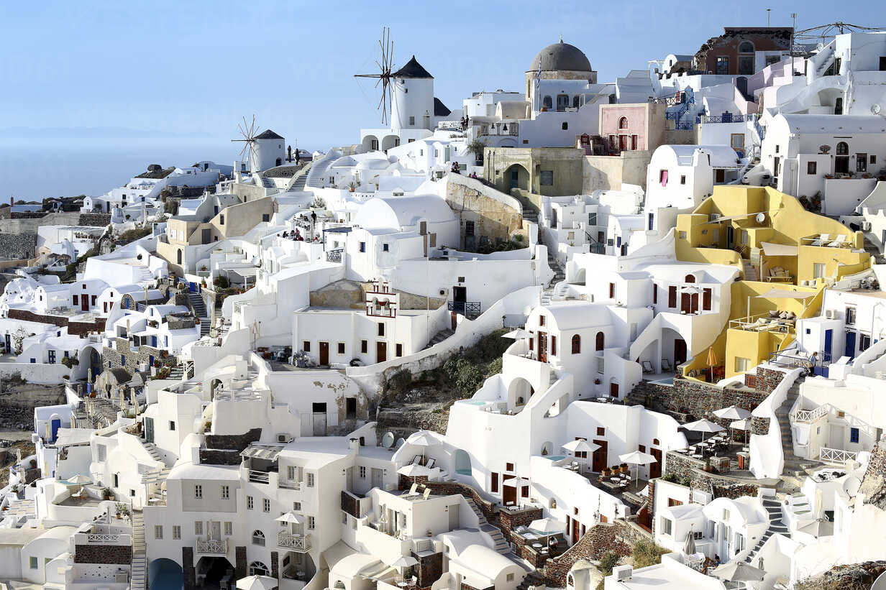
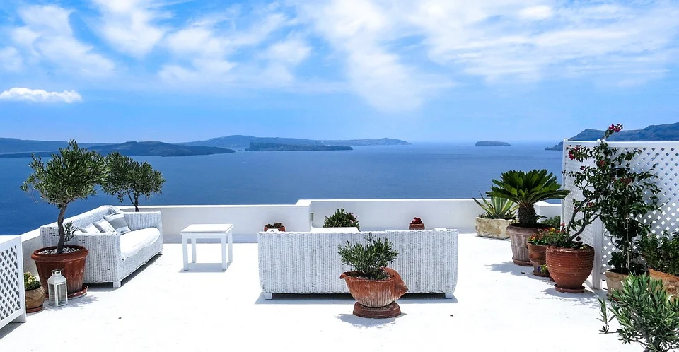
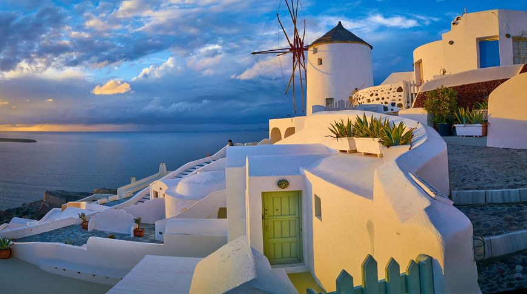

Santorini is a beautiful volcanic well-known island which located in Aegean sea. The island may have a dry climate, but its people have managed to successfully cultivate high quality crops like cherry tomatoes, cucumbers, fava beans and many more that are popular all over the country. This island of Greece is only 76 km², the coastline is approximately 70 km. The island is home to approximately 15 thousand people.In the past, Santorini was round in shape and was called Callista.
After the eruption of the volcano (even BC), the shape of the island changed. Now the wild landscape prevails here. And the newly built white houses seemed to hang over the sea surface, on the steep slopes of an unusual dark color. Only a bizarre relief, frozen lava and multi-colored sand remind of the eruption. The island of Santorini in Greece is especially attractive at night. The stairs in the lanterns, lit by moonlight, are like stairs in a fairy tale. Many legends are associated with this island of Greece. According to one of them, Santorini is part of the sunken Atlantis, according to the second, it is called the Pompeii of the Aegean Sea.
The capital of Santorini, Fira resort, is of the greatest interest among tourists. This small town is known for its tragic history. In 1956, the settlement (like others on the island) was completely destroyed by an earthquake. Another famous Greek resort in Santorini is Oia (Oia), here, according to travelers, the most magical sunsets in the world. If you are interested in a beach holiday, pay attention to Kamari and Perissa. Here you can enjoy comfortable beaches with black sand and high-level service.
Fira (or Tira) was founded in the second half of the 18th century. The settlement has repeatedly experienced terrible earthquakes, which almost completely wiped it off the face of the earth. Fira is located on terraces on the rocks, decorated with domes, snow-white houses and scaffolds (ascetic cave houses). Today, many hotels, bars and restaurants have been built here. The town has a port - Skala Fira, located 270 meters below the city level. You can get from the port to the city by stairs, but you will have to walk 580 steps. Fira is a pedestrian resort area, cobbled streets give a feeling of bygone eras. Fira is also a place for lovers of nightlife. There are many restaurants, discos, bars that welcome guests around the clock.
Oia is the most famous city in Santorini. Most often, it is he who is depicted in the photo of the island - white houses with blue shutters are his business card. There are no beaches in the settlement, people come here for sunsets and dinners in a pleasant atmosphere with beautiful views. After the devastating earthquake in 1956, the village was completely restored and is now very popular. Oyu is called the city of newlyweds - couples from all over the world come here to spend their honeymoon. And it is not surprising - the atmosphere here is saturated with romance and luxury.
If a relaxing beach holiday is too boring for you, set aside some of the time for sightseeing. For connoisseurs of the history of Ancient Greece, it will be interesting to look at the excavations of the ancient city of Akrotiri. The ruins are located in the southern part of Santorini. The name of the settlement in ancient times is unknown. During the excavations, it was named Akrotiri - as the nearest village. Scientists have found that the settlement was destroyed by a volcanic eruption about 3.5 thousand years ago. The found exhibits are mainly works of ancient art, of the jewelry - only one object as an ashes. Excavations continue to this day, perhaps the most interesting things are still underground. The entrance to the territory of the attraction is paid. Those who wish are given the opportunity to walk along the ancient cobbled pavement and look at the frescoes.
Sanctuary of Apollo is the second name of this ancient city. The city of Fira (Thira) is located in the western part of Santorini, with a population of just over 1.5 thousand people. Here are preserved buildings of the Doric era, tombs built in the 9th century and buildings of the incredible beauty of the Byzantine period. Be sure to visit the sanctuary built in honor of the god Apollo in the 8th century BC. You can get to this place only on foot, you need to follow from Perissa in the direction of Kamari or rent a taxi to Mount Mesa Vouna. From Thira, you can walk to the port by walking down a stone staircase. Another option to get to the pier is a kind of attraction and unusual entertainment - to overcome the path on the donkey, which you will meet at the stairs.